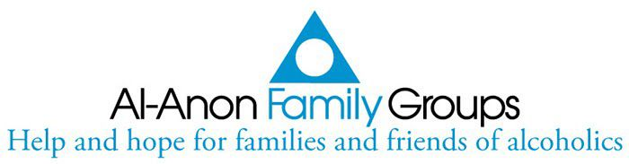

Who are Al-Anon members?
Al-Anon member are people, just like you, who are worried about someone with a drinking problem.
If someone you care about has a drinking problem, you can see what it's doing to them.
Can you see what it's doing to you?

Al-Anon family groups are a fellowship of relatives and friends of alcoholics who share their experience, strength and hope in order to order to solve their common problems.
We believe alcoholism is a family illness and that changed attitudes can aid recovery.
Al-anon is not allied with any sect, denomination, political entity, organisation or institution; does not engage in any controversy; neither endorses nor opposes any cause. There are no dues for membership. Al-anon is self-supporting through its own voluntary contributions.
Al-anon has but one purpose: to help families of alcoholics. We do this by practising the Twelve Steps, by welcoming and giving comfort to families of alcoholics and by giving understanding and encouragement to the alcoholic.
The Al-anon programme is based on the Twelve Steps (adapted from Alcoholics Anonymous) which we try little by little, one day at a time, to apply to our lives along with our slogans and the serenity prayer. The loving interchange of help among members and daily reading of Al-anon literature thus makes us ready to receive the priceless gift of serenity.
In Al-anon we learn to share our experience strength and hope with other members